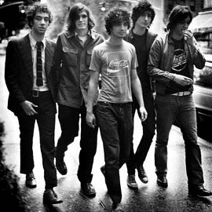

Bio
The Strokes are an American alternative rock band, based in New York. Formed in 1998, the lineup of the band consists of Nick Valensi on lead guitar, Julian Casablancas on vocals, Fabrizio Moretti on drums, Albert Hammond Jr. on rhythm guitar and Nikolai Fraiture on bass guitar.
They rose to prominence with the release of their debut album and were at the forefront of the garage rock revival of the early 21st century.
Like them on Facebook: The Strokes Facebook Page

The Strokes